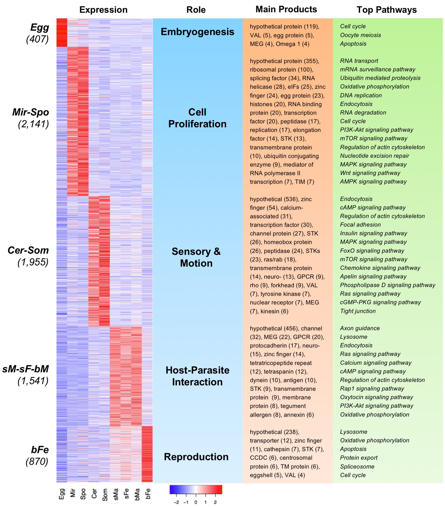
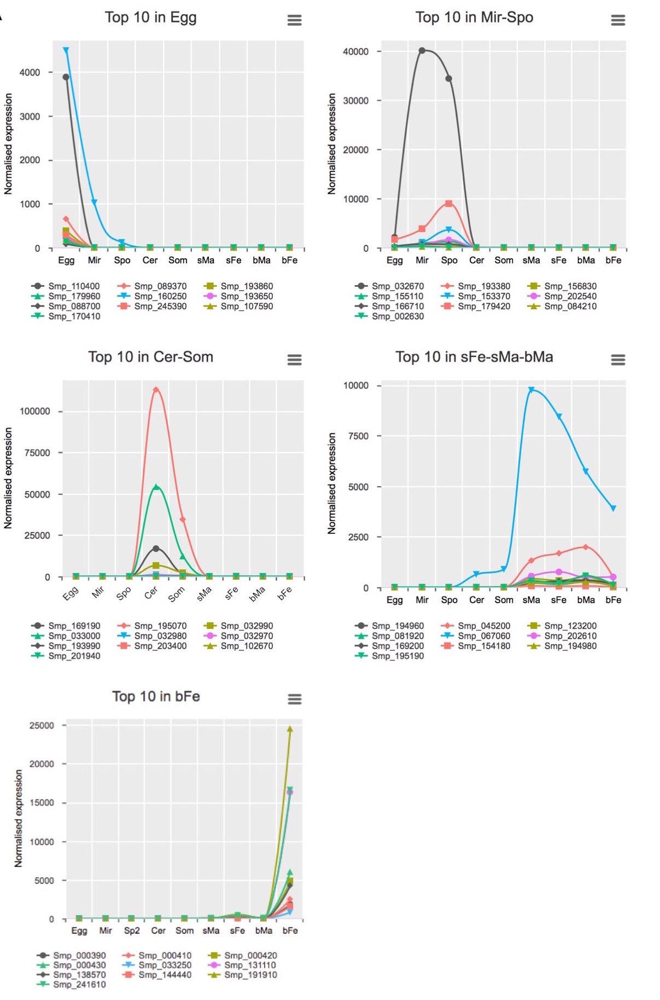
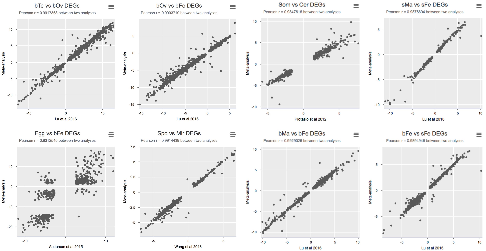
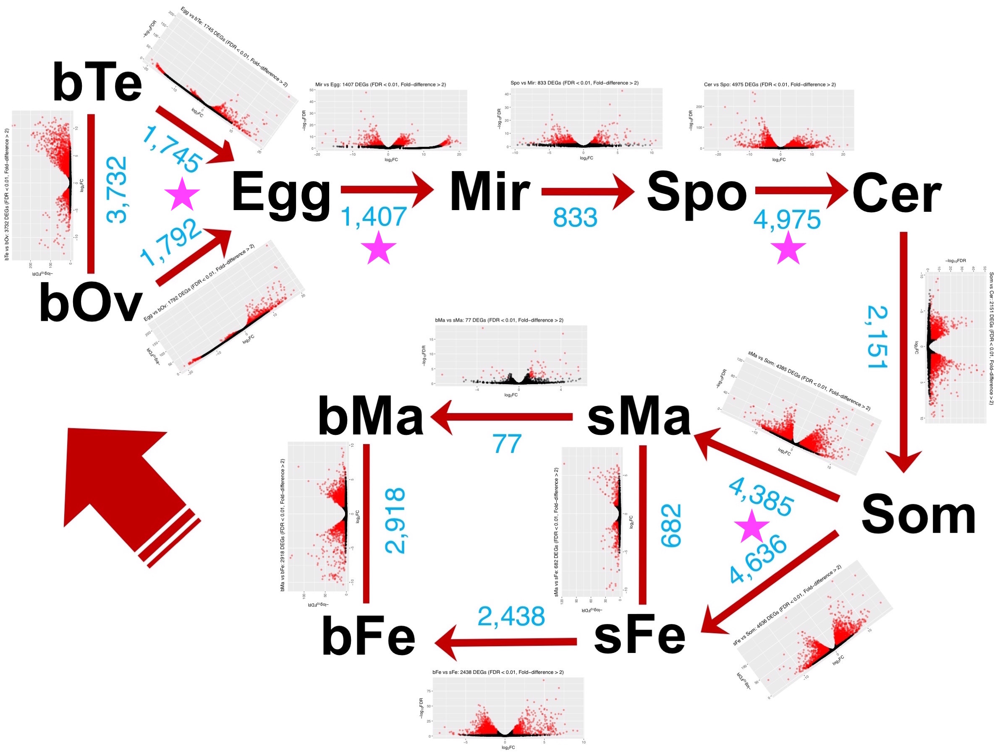
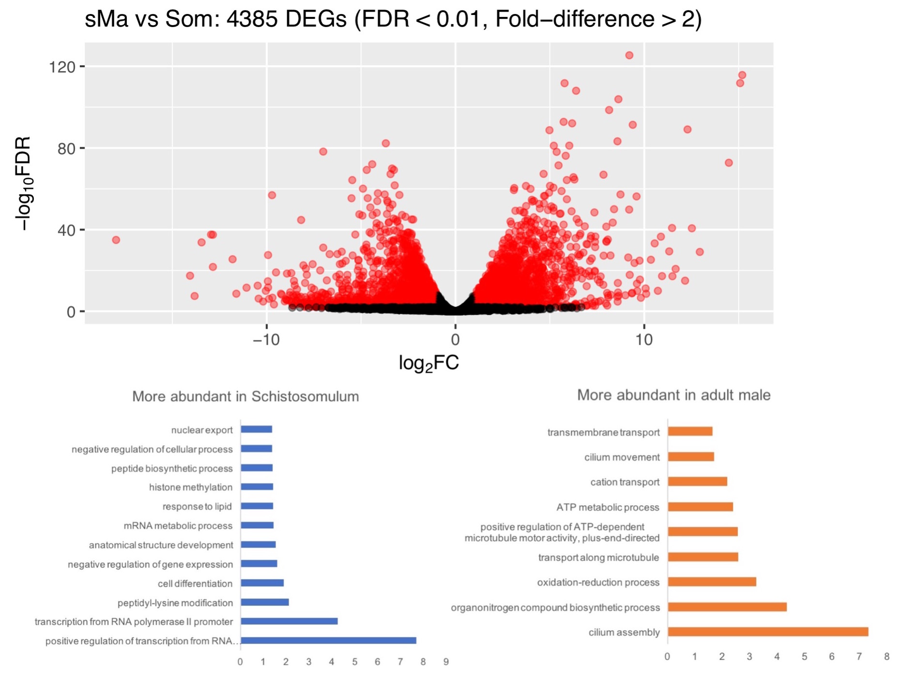
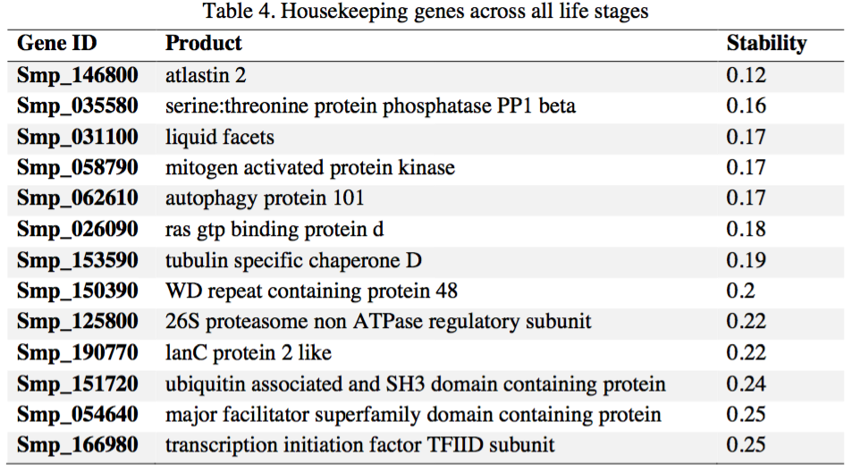
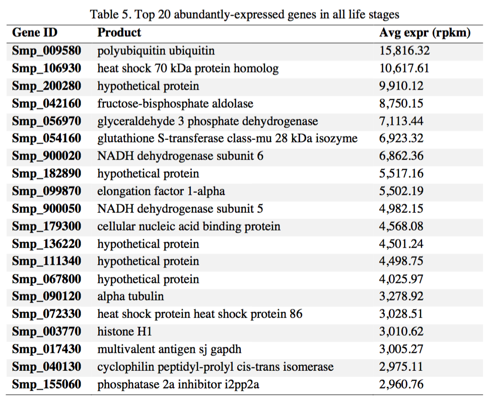
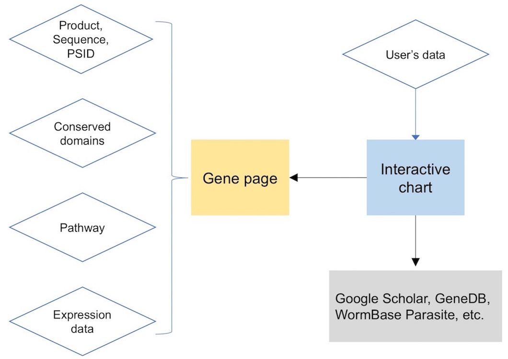

Analysis and visualisation of RNAseq gene expression in all life stages of S. mansoni
Zhigang Lu
10/10/2017
This is based on V5.2. Why?
- Original analyses were on V5. Need to compare/validate the results.
- Kind of providing an archive for V5.2 (main findings might not change).
- V7 annotation is ongoing. A lot of identifier changes.
- Can facilitate V7 annotation, esp. concerning the functions and expression of previous models.
- New and deep analysis can be performed on V7 later, with better samples and replicates (e.g. eggs).
Data information
| Type | Label | Sequence Source | Biological Replicates | Reference |
|---|---|---|---|---|
| Gonad (testis) | bTe | PRJEB14695 | 3 | Lu et al. (2016) |
| Gonad (ovary) | bOv | PRJEB14695 | 3 | Lu et al. (2016) |
| Egg | Egg | PRJNA294789 | 1 | Anderson et al. (2015) |
| Miracidium | Mir | PRJNA294789 | 1 | Wang et al. (2013) |
| Sporocyst (48h) | Spo | PRJNA294789 | 1 | Wang et al. (2013) |
| Cercaria | Cer | PRJEB2350 | 3 | Protasio et al. (2012) |
| Schistosomulum (3h) | Som | PRJEB2350 | 2 | Protasio et al. (2012) |
| Adult male before pairing | sMa | PRJEB14695 | 3 | Lu et al. (2016) |
| Adult female before pairing | sFe | PRJEB14695 | 3 | Lu et al. (2016) |
| Adult male after pairing | bMa | PRJEB14695 | 3 | Lu et al. (2016) |
| Adult female after pairing | bFe | PRJEB14695 | 3 | Lu et al. (2016) |
Lirary size and expressed genes
Principle Component Analysis
Principle Component Analysis (3D)
Stage(s)-preferential gene expression


Differential expression between adjacent life stages
Correlations between meta-analysis and original analyses
Additional information about stage transitions


New housekeeping genes

Abundantly expressed genes in all life stages

Data integration and access
Little DEMO: Presentation with interactive charts
Presentation framwork (HTML/CSS/JavaScript): RevealJS, DeckJS, Webslides, etc.
Interactive charts (JavaScript): ChartJS, Plotly, HighCharts, AnyChart, ECharts, etc.